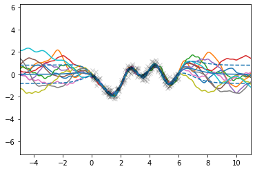

Efficient sampling with Gaussian processes and Random Fourier Features#
Gaussian processes (GPs) provide a mathematically elegant framework for learning unknown functions from data. They are robust to overfitting, allow to incorporate prior assumptions into the model and provide calibrated uncertainty estimates for their predictions. This makes them prime candidates in settings where data is scarce, noisy or very costly to obtain, and are natural tools in applications such as Bayesian optimisation (BO).
Despite their favorable properties, the use of GPs still has practical limitations. One of them is the computational complexity to draw predictive samples from the model, which quickly becomes prohibitive as the sample size grows, and creates a well-known bottleneck for GP-based Thompson sampling (GP-TS) for instance. Recent work [WBT+20] proposes to combine GP’s weight-space and function-space views to draw samples more efficiently from (approximate) posterior GPs with encouraging results in low-dimensional regimes.
In GPflux, this functionality is unlocked by grouping a kernel (e.g., gpflow.kernels.Matern52) with its feature decomposition using gpflux.sampling.KernelWithFeatureDecomposition. See the notebooks on weight space approximation and efficient posterior sampling for a thorough explanation.
[1]:
import numpy as np
import tensorflow as tf
import matplotlib.pyplot as plt
import gpflow
import gpflux
from gpflow.config import default_float
from gpflux.layers.basis_functions.fourier_features import RandomFourierFeaturesCosine
from gpflux.sampling import KernelWithFeatureDecomposition
from gpflux.models.deep_gp import sample_dgp
tf.keras.backend.set_floatx("float64")
2022-07-22 09:25:06.096876: W tensorflow/stream_executor/platform/default/dso_loader.cc:64] Could not load dynamic library 'libcudart.so.11.0'; dlerror: libcudart.so.11.0: cannot open shared object file: No such file or directory; LD_LIBRARY_PATH: /opt/hostedtoolcache/Python/3.7.13/x64/lib
2022-07-22 09:25:06.096916: I tensorflow/stream_executor/cuda/cudart_stub.cc:29] Ignore above cudart dlerror if you do not have a GPU set up on your machine.
Load Snelson dataset#
[2]:
d = np.load("../../tests/snelson1d.npz")
X, Y = data = d["X"], d["Y"]
num_data, input_dim = X.shape
Setting up the kernel and its feature decomposition#
The KernelWithFeatureDecomposition instance represents a kernel together with its finite feature decomposition,
where \(\lambda_i\) and \(\phi_i(\cdot)\) are the coefficients (eigenvalues) and features (eigenfunctions), respectively, and \(L\) is the finite cutoff. See the notebook on weight space approximation for a detailed explanation of how to construct this decomposition using Random Fourier Features (RFF).
[3]:
kernel = gpflow.kernels.Matern52()
Z = np.linspace(X.min(), X.max(), 10).reshape(-1, 1).astype(np.float64)
inducing_variable = gpflow.inducing_variables.InducingPoints(Z)
gpflow.utilities.set_trainable(inducing_variable, False)
num_rff = 1000
eigenfunctions = RandomFourierFeaturesCosine(kernel, num_rff, dtype=default_float())
eigenvalues = np.ones((num_rff, 1), dtype=default_float())
kernel_with_features = KernelWithFeatureDecomposition(kernel, eigenfunctions, eigenvalues)
2022-07-22 09:25:09.558123: W tensorflow/stream_executor/platform/default/dso_loader.cc:64] Could not load dynamic library 'libcuda.so.1'; dlerror: libcuda.so.1: cannot open shared object file: No such file or directory; LD_LIBRARY_PATH: /opt/hostedtoolcache/Python/3.7.13/x64/lib
2022-07-22 09:25:09.558162: W tensorflow/stream_executor/cuda/cuda_driver.cc:269] failed call to cuInit: UNKNOWN ERROR (303)
2022-07-22 09:25:09.558188: I tensorflow/stream_executor/cuda/cuda_diagnostics.cc:156] kernel driver does not appear to be running on this host (fv-az457-376): /proc/driver/nvidia/version does not exist
2022-07-22 09:25:09.558525: I tensorflow/core/platform/cpu_feature_guard.cc:151] This TensorFlow binary is optimized with oneAPI Deep Neural Network Library (oneDNN) to use the following CPU instructions in performance-critical operations: AVX2 AVX512F FMA
To enable them in other operations, rebuild TensorFlow with the appropriate compiler flags.
2022-07-22 09:25:09.587503: W tensorflow/python/util/util.cc:368] Sets are not currently considered sequences, but this may change in the future, so consider avoiding using them.
Building and training the single-layer GP#
Initialise the single-layer GP#
Because KernelWithFeatureDecomposition is just a gpflow.kernels.Kernel, we can construct a GP layer with it.
[4]:
layer = gpflux.layers.GPLayer(
kernel_with_features,
inducing_variable,
num_data,
whiten=True,
num_latent_gps=1,
mean_function=gpflow.mean_functions.Zero(),
)
likelihood_layer = gpflux.layers.LikelihoodLayer(gpflow.likelihoods.Gaussian()) # noqa: E231
dgp = gpflux.models.DeepGP([layer], likelihood_layer)
model = dgp.as_training_model()
/home/runner/work/GPflux/GPflux/gpflux/layers/gp_layer.py:199: UserWarning: Could not verify the compatibility of the `kernel`, `inducing_variable` and `mean_function`. We advise using `gpflux.helpers.construct_*` to create compatible kernels and inducing variables. As `num_latent_gps=1` has been specified explicitly, this will be used to create the `q_mu` and `q_sqrt` parameters.
"Could not verify the compatibility of the `kernel`, `inducing_variable` "
/opt/hostedtoolcache/Python/3.7.13/x64/lib/python3.7/site-packages/ipykernel_launcher.py:9: DeprecationWarning: Call to deprecated class TrackableLayer. (GPflux's `TrackableLayer` was prior to TF2.5 used to collect GPflow variables in subclassed layers. As of TF 2.5, `tf.Module` supports this natively and there is no need for `TrackableLayer` anymore. It will be removed in GPflux version `1.0.0`.)
if __name__ == "__main__":
WARNING:tensorflow:From /opt/hostedtoolcache/Python/3.7.13/x64/lib/python3.7/site-packages/tensorflow_probability/python/distributions/distribution.py:342: calling MultivariateNormalDiag.__init__ (from tensorflow_probability.python.distributions.mvn_diag) with scale_identity_multiplier is deprecated and will be removed after 2020-01-01.
Instructions for updating:
`scale_identity_multiplier` is deprecated; please combine it into `scale_diag` directly instead.
Fit model to data#
[5]:
model.compile(tf.optimizers.Adam(learning_rate=0.1))
callbacks = [
tf.keras.callbacks.ReduceLROnPlateau(
monitor="loss",
patience=5,
factor=0.95,
verbose=0,
min_lr=1e-6,
)
]
history = model.fit(
{"inputs": X, "targets": Y},
batch_size=num_data,
epochs=100,
callbacks=callbacks,
verbose=0,
)
Drawing samples#
Now that the model is trained we can draw efficient and consistent samples from the posterior GP. By “consistent” we mean that the sample_dgp function returns a function object that can be evaluated multiple times at different locations, but importantly, the returned function values will come from the same GP sample. This functionality is implemented by the gpflux.sampling.efficient_sample function.
[6]:
from typing import Callable
x_margin = 5
n_x = 1000
X_test = np.linspace(X.min() - x_margin, X.max() + x_margin, n_x).reshape(-1, 1)
f_mean, f_var = dgp.predict_f(X_test)
f_scale = np.sqrt(f_var)
# Plot samples
n_sim = 10
for _ in range(n_sim):
# `sample_dgp` returns a callable - which we subsequently evaluate
f_sample: Callable[[tf.Tensor], tf.Tensor] = sample_dgp(dgp)
plt.plot(X_test, f_sample(X_test).numpy())
# Plot GP mean and uncertainty intervals and data
plt.plot(X_test, f_mean, "C0")
plt.plot(X_test, f_mean + f_scale, "C0--")
plt.plot(X_test, f_mean - f_scale, "C0--")
plt.plot(X, Y, "kx", alpha=0.2)
plt.xlim(X.min() - x_margin, X.max() + x_margin)
plt.ylim(Y.min() - x_margin, Y.max() + x_margin)
plt.show()
